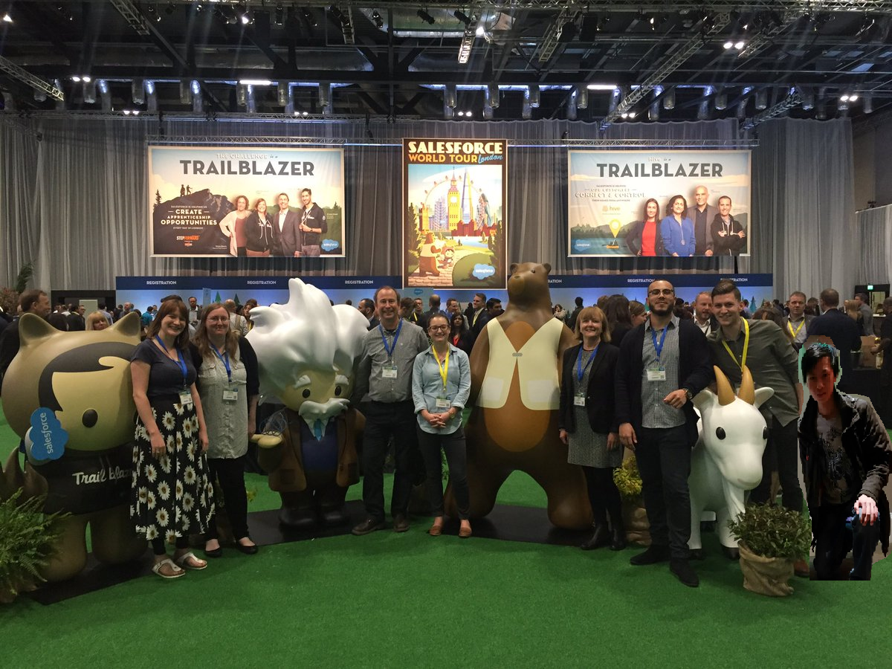

My Porfolio

About me:
Hello, my name is Luke Trinh and I am currently working as a apprentice at Homeless Link as a systems administrator from August 2016 to September 2017. After which I will doing off to university to study computing. After university I am considering a job in a similar position as my apprenticeship as I enjoy the work and can see myself using it in the future. Here in my portfolio you will be able to find out my interests and skills. You can use the navigation bar to go through the different sections of my website and even contact me if you wish.
My Job:
- Currently working at Homeless Link as a systems administrator using the cloud package Salesforce.
- Salesforce is a cloud package that allows users to create online databases to store customer information and reporting around stored values.
- My job at Homeless Link includes working with the In-Form team to deliver application packages for our customers.
- This includes responding to customers and fixing problems within the downloaded packages to ensure a successful customer experience.
- My job is hard but ultimately satisfying and I have worked effectively with my colleagues to deliver results.
My Interests and Skills:
- Sometimes I like to play video games. I am currently playing Hearthstone a trading card game on my phone.
- One my hobbies is watching movies and television. I have recently watched the new marvel movies which I enjoy.
- I have an advanced knowledge on Microsoft Office applications such as PowerPoint and Word.
- I am interested in computing. I am currently learning how to code properly in JavaScript in class.
- In my spare time I like to practice playing keyboard and going outside to see other people.
- Currently I have a grounded knowledge on Salesforce administrative tasks for my job.